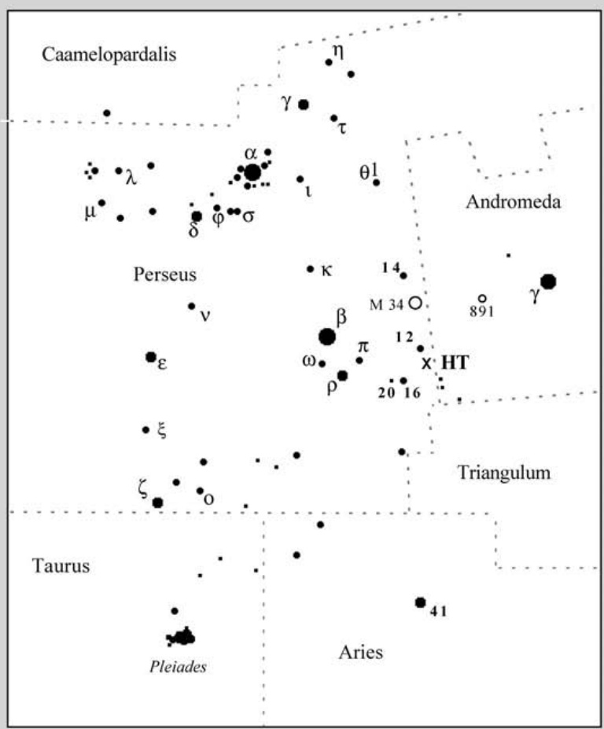

隐藏的宝藏10号 · Hidden Treasure 10 NGC 1023 (NGC 1023)

Deep in the northern constellation of Perseus lies one of the most visually striking lenticular galaxies accessible to amateur astronomers—NGC 1023. This magnificent object, cataloged by William Herschel on December 19, 1786, presents itself as a remarkably pure lens-shaped system, its smooth elliptical form betraying the presence of an ancient disk of stars that has long since exhausted its spiral potential. The galaxy's structure represents a cosmic bridge between the familiar ellipticals and the more dynamic spirals, making it a fascinating study for observers seeking to understand galactic evolution.
在英仙座北部深处，隐匿着一个视觉上极为引人注目的透镜状星系——NGC 1023。这个壮丽的天体由威廉·赫歇尔于1786年12月19日发现，它以极其纯净的透镜形态呈现在观测者面前，其光滑的椭圆轮廓掩盖着一个古老恒星盘的存在——这个恒星盘早已耗尽了其螺旋结构的潜力。这个星系的结构代表着椭圆形星系与更活跃的旋涡星系之间的一座宇宙桥梁，使其成为渴望理解星系演化的观测者们一个引人入胜的研究目标。
"NGC 1023 is a bright, impressive galaxy with a smooth, featureless elliptical core that gradually brightens toward the center."
"NGC 1023是一个明亮而令人印象深刻星系，拥有光滑、无特征的椭圆核，并逐渐向中心变亮。"
The galaxy lies approximately 32 million light-years from Earth, though some estimates suggest it may be as close as 10 million parsecs. This proximity has allowed astronomers to resolve individual bright stars within its structure, providing crucial data for distance measurements and stellar population studies. Its proximity also makes NGC 1023 an ideal laboratory for studying the internal dynamics of lenticular galaxies—the relics of spiral galaxies that have been stripped of their gas and dust through various environmental processes.
这个星系距离地球大约3200万光年，尽管一些估计认为它可能近至1000万秒差距。这种近距离使得天文学家能够解析其结构内的独立亮星，为距离测量和恒星种群研究提供了关键数据。它的近距也使NGC 1023成为研究透镜状星系内部动力学的理想实验室——这些星系是旋涡星系经历了各种环境过程被剥离气体和尘埃后的遗迹。
"The galaxy's outer regions show faint tidal features—subtle hints of gravitational interaction with nearby companions."
"这个星系的外围区域显示出微弱的潮汐特征——与其近邻相伴星系引力相互作用的微妙迹象。"
关键参数 · Key Parameters
| 参数 · Parameter | 数值 · Value |
|---|---|
| 类型 · Type | 透镜状星系 (S0) · Lenticular Galaxy |
| 星座 · Constellation | 英仙座 · Perseus |
| 赤经 · RA | 02h 40m 16s |
| 赤纬 · Dec | +39° 03′ 48″ |
| 距离 · Distance | ~32百万光年 · ~32 million ly |
| 视星等 · Apparent Magnitude | 10.4 |
| 视直径 · Apparent Size | 8.7′ × 2.5′ |
| 角大小 · Angular Size | 8.7 × 2.5 弧分 · arcminutes |
结构与特征 · Structure and Characteristics
NGC 1023 possesses a complex internal architecture that belies its seemingly simple lenticular appearance. At its heart lies a concentrated nuclear region, while surrounding it is a prominent stellar bar—the engine room for the galaxy's former spiral structure. This bar has channeled gas and dust toward the center, feeding potential star formation and helping to maintain the galaxy's thin disk. The disk itself is dominated by an old stellar population, with little ongoing star formation to disturb its ancient serenity.
NGC 1023拥有复杂的内部结构，这与其看似简单的透镜状外观形成了鲜明对比。在其核心是一个集中的核区域，周围环绕着一个突出的恒星棒——这是星系前旋涡结构的引擎室。这个棒将气体和尘埃引向中心，为潜在的恒星形成提供燃料，并帮助维持星系薄盘的存在。盘本身以古老的恒星种群为主，几乎没有正在进行的恒星形成来打破其古老的宁静。
"The galaxy shows a remarkably pure structure, with a smooth elliptical core gradually transitioning into a faint disk."
"这个星系展现出极其纯净的结构，光滑的椭圆核逐渐过渡为微弱的盘面。"
What makes NGC 1023 particularly intriguing to professional astronomers is its family of companion galaxies. The system includes at least a dozen dwarf galaxies that appear to be gravitationally bound to NGC 1023, making it one of the most populated satellite systems in the nearby universe. These companions range from tiny dwarf ellipticals to more substantial dwarf irregulars, and their varied morphologies provide clues about the processes that have shaped the entire group over billions of years.
使NGC 1023对专业天文学家特别感兴趣的是它的伴星系家族。该系统至少包含十几个矮星系，它们似乎受到引力束缚而围绕NGC 1023运转，使其成为附近宇宙中卫星系统最丰富的之一。这些伴星系从微小的矮椭球星系到更实质性的矮不规则星系都有，它们的不同形态为理解整个星系群在数十亿年间被塑造的过程提供了线索。
历史观测 · Historical Observations
William Herschel first captured this celestial treasure with his 20-inch reflecting telescope from Slough, England. He described it as "a very bright, pretty large, extended nebula, gradually brighter in the middle," a characterization that remains remarkably accurate to this day. The galaxy's inclusion in the Caldwell Catalogue by Sir Patrick Moore as object number 10 speaks to its enduring appeal as an observing target for amateur astronomers worldwide.
威廉·赫歇尔首次用他位于英格兰斯劳的20英寸反射望远镜捕获了这个天体的宝藏。他将其描述为"一个非常明亮、相当大、延伸的星云，中心逐渐变亮"，这个描述至今仍然非常准确。该星系被帕特里克·摩尔爵士收入考德威尔星表作为第10号天体，证明了它在全球业余天文学家观测目标中持久的吸引力。
观测体验 · Observing Experience
Under dark skies with a 10-inch telescope, NGC 1023 reveals itself as an elegant, cigar-shaped streak of light cutting through the star-rich fields of Perseus. The galaxy's bright, elongated core dominates the view, while the fainter outer extensions require patience and careful averted vision to fully appreciate. I remember the first time I observed this object—the way its smooth, featureless glow seemed to pulse with an inner light, as if containing secrets waiting to be discovered.
在黑暗的天空下，使用10英寸望远镜观测，NGC 1023呈现为一条优雅的雪茄形光带，穿过英仙座繁星点点的区域。星系明亮、细长的核心主导着视野，而较微弱的外围延伸则需要耐心和巧妙运用偏视观测才能充分欣赏。我记得第一次观测这个天体时的情景——它那光滑、无特征的光芒似乎随着内在的光而脉动，仿佛蕴含着等待被发现的秘密。
"The galaxy's smooth, featureless elliptical core gradually brightens toward the center, creating a sense of depth and mystery."
"这个星系光滑、无特征的椭圆核逐渐向中心变亮，营造出一种深度和神秘感。"
Switching to a 16-inch instrument under pristine conditions reveals something extraordinary—faint shells or arcs of light surrounding the main body, subtle asymmetries in the outer envelope that hint at past gravitational encounters. These delicate structures are the signatures of ancient mergers, fossil records written in starlight across the cosmos. The experience of tracing these ghostly features across the field of view is nothing short of transcendent, connecting the observer directly with billions of years of galactic history.
在纯净的条件下换用16英寸望远镜观测，会揭示出一些非凡的东西——围绕着主体结构的微弱外壳或弧形光晕，外围包层中暗示着过去引力相遇的微妙不对称。这些精细的结构是古代并合的签名，是用星光写在宇宙中的化石记录。追踪这些幽灵般特征横跨视野的经历是绝对超然的，将观测者直接与数十亿年的
🔒 受限于篇幅，本文仅展示部分样章。O'Meara 先生完整的观测手记、实测数据及未公开的独家配图，请参阅原著双语典藏版。
👉 立即在闲鱼获取《DEEP-SKY COMPANIONS》中英双语高清典藏版